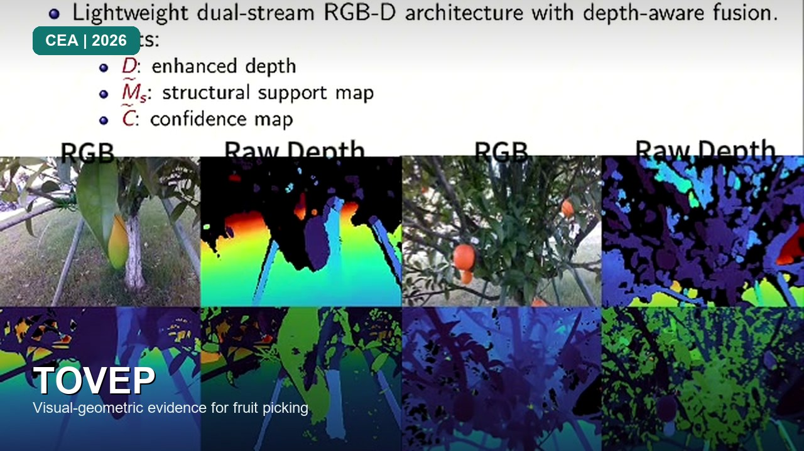

TOVEP: Visual-Geometric Evidence Enhancement for VLM-Guided Fruit Picking-Point Localization
A visual–geometric evidence enhancement framework that boosts multimodal VLM perception for fruit harvesting: RGB-D is converted into enhanced depth, structural support, and confidence cues, then focused into attachment-region references so the model can more reliably localize picking points and approach orientations.
Summary. TOVEP gives a general-purpose VLM structured geometric evidence before asking it to localize a physical action. Its value lies in converting noisy RGB-D observations into interpretable support and confidence cues that remain connected to an executable picking pose.
RGB-D evidence enhancement
Vision-language model
Picking-point localization